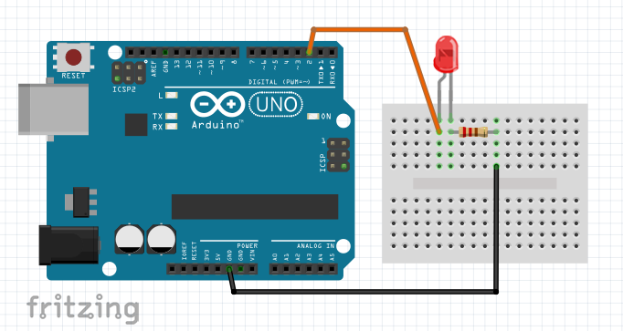

A microcontroller is an integrated circuit that gathers the essential components of a computer (processor, RAM, storage memory etc). They are generally used in embedded systems and are characterized by a low power consumption and a relatively low clock speed compared to the general purpose microprocessors found in our personal computers.
The equivalent of the famous "Hello world!" program on a microcontroller is the "Blink". It simply consists in making an LED blink periodically. In this article, we will demonstrate this program on an Arduino UNO with the tools provided by Arduino, then we will progressively replace these tools by our own version of them to understand the internal workings of our program and the microcontroller used by the board. This article is meant to be synthetic, but it covers a lot of things. The text will therefore be rather short, but many sources and links for further reading are available at the end.
The Arduino UNO
The Arduino UNO is a very popular microcontroller development board. Its architecture is simple and there is a free IDE that allows us to write programs and load them into the board to be executed. In addition, there are many libraries that facilitate the use of the board itself and the various peripherals that can be connected to it, all open-source (even some electronic schematics are available). The IDE also offers several tools such as the serial monitor which allows us to communicate with our programs through a serial port.
The electronic circuit
To start, we need an electronic circuit. Nothing very complicated, we place an LED between
the 5V pin and a GND pin of the Arduino. We also add a resistor of ~200 Ohm in series with
the LED to limit the current to 15 mA. Be careful to take into account the voltage across
the LED to calculate the resistance. There are some
calculators
online for that.
If we power the Arduino (in USB for example), the LED lights up.
But it doesn't blink ! For that we will use the GPIO pins of the board (General Purpose Input
Output). These are pins that the microcontroller can use to read a voltage or write it.
So we can connect the cathode of the LED to pin 2 which is a GPIO (like pins 0-13 and A0-5)
and ask the microcontroller to switch the voltage to 0V or 5V to turn the LED on or off.

The program
Here is the program that we will use:
#define LED_PIN 2 // We use pin 2 on the Arduino to switch from 0 to 5V
// This function is executed as soon as the microcontroller gets power
void setup() {
pinMode(LED_PIN, OUTPUT); // Sets pin 2 as an output so we can control the voltage
}
// This function will be executed in a loop forever
void loop() {
digitalWrite(LED_PIN, HIGH); // Sets the voltage at pin 2 to 5V
delay(1000); // Waits for 1 second
digitalWrite(LED_PIN, LOW); // Sets the voltage at pin 2 to 0V
delay(1000); // Waits for 1 second
} All programs in the Arduino IDE have two special functions: setup and loop. The setup function is called once at the very beginning of the execution, then loop is called in a loop (hence the name) as long as the board is powered. In the setup function there is only one call to pinMode which is used to define if a pin should be used as input or output. In our case it is an output since we want to control the voltage at pin 2 (INPUT would have allowed us to read the voltage at pin 2). In loop we have calls to the delay function which waits a certain number of milliseconds, and digitalWrite which forces a potential on a given pin (HIGH corresponds to the supply voltage of the microcontroller, i.e. 5V).
Now select Arduino UNO in Tools > Board and the right port in Tools > Port, then click on Upload and our LED is blinking!
It was easy, right? But if we think about it, we don't know much about what we just did. All our code does is calling pre-made functions but we don't need them!
How do Arduino libraries work?
The Arduino UNO uses the AtMega328p microcontroller designed by Atmel. Electronic components always have an associated datasheet to explain everything there is to know about the component. Our microcontroller is not an exception since Microchip has generously put online a 653 pages datasheet containing everything we could possibly need! It's a bit overwhelming at first, but it's pretty easy to find what you are looking for.
PinMode
We will start by trying to replace the pinMode function. We only use it to switch pin 2
to output mode. When reading the datasheet we notice that there are DDRx registers
(Data Direction Register x), x corresponding to a port. Each bit in these registers
corresponds to one GPIO. The AtMega328p has 3 ports
allowing access to all GPIOs. Pin 2 is on port D (see the image below), pin PD2.
So we have to set bit 2 of the DDRD register to 1 (for the write mode) and that's it.
Arduino provides macros to access the registers easily, so we can replace the call to
pinMode by DDRD |= 0b00000100
We can do without these macros, we just need to add this line at the top of our file:
#define DDRD (*(volatile unsigned char*) 0x2A)
0x2A is the address of the register in the full address space. On the datasheet it has
written 0x0A next to it, but this address corresponds to the address space of IO registers.
The volatile keyword prevents the compiler from optimizing by removing our code. Without it
the compiler would think it's useless because we write
to this address but we never use what we have written (the register is directly connected to
the hardware it controls).

Timers
To replace the delay function we could use a naive approach with a loop that runs for as much time as we want. This solution works and is not that bad for a microcontroller, but there is another much more interesting approach: timers. Timers are just counters that count the rising edges of a clock. The AtMega328p has 3 of them and they offer a lot of functionality. A classic example of timer usage is the microsecond counter since the microcontroller was powered on. We use a timer to count the rising edges of the main clock (16MHz) and make it increment a variable every time it counts 16 pulses.
The Prescaler
To make our LED blink, we will configure a timer to do something every second. To do that, we will configure the prescaler and the clock source. In our case, we want to use the main 16MHz clock, and set a prescaler of 1024. The prescaler is used to divide the clock speed, which means that the timer will count at 15.625 kHz instead of 16 MHz. So we need to set the last 3 bits of the TCCR1B register to 101 as explained in the datasheet.
The "Output Compare"
Next we will configure the "Output Compare". The purpose of this system is to continuously compare the value of the timer with a value defined by the program, and to do something when the values are equal. We can configure the action so that it toggles the value of pin OC1A which corresponds to pin 9 (see the diagram above) and then reset the timer to 0 (the reset is called CTC or Clear Timer on Compare match). To do this we have to set TCCR1A to 01000000 and put 1 on bit 3 of TCCR1B. The value to which the counter will be compared goes into the OCR1A register. We set 15625 so that we have a match every second since the timer is incremented at 15625 Hz. The other bits of the registers can be set to 0 but I advise you to read the datasheet to understand the role of each bit. Here is the program implementing all this (except for pinMode, I had to change what was explained above to use pin 9 instead of pin 2).
#define DDRB (*(volatile unsigned char*) 0x24)
#define TCCR1A (*(volatile unsigned char*) 0x80)
#define TCCR1B (*(volatile unsigned char*) 0x81)
#define OCR1A (*(volatile unsigned short*) 0x88)
void setup() {
TCCR1A = 0;
TCCR1B = 0;
TCCR1A |= 0b01000000; // Toggles PB1 on compare match
TCCR1B |= 0b00000101; // Sets the prescaler to 1024
TCCR1B |= 0b00001000; // Enables CTC
OCR1A = 15625; // Sets the compare value
DDRB |= 0b00000010; // Sets PB1 (pin 9) as an output
}
void loop() {} Interruptions
This method works well but it has the disadvantage of being rather limited in terms of actions to do when the timer reaches its maximum value. For example, we have to put our LED on pin 9. We will now look at another much more powerful method (that will allow us to put our LED on pin 2!). This method uses interruptions. An interruption is a mechanism of the microcontroller that allows us to listen for certain events and interrupt the microcontroller to execute another function when the event is detected. Then the microcontroller comes back to where it was. We can configure the timer so that it triggers an interrupt when there is a compare match. To do this, we will set bit 1 to 1 in TIMSK1 (Interrupt Mask Register). By doing this, as soon as there is a compare match, the OCF1A flag (in the TIFR1 register) will be set, and an interrupt will be triggered. The last thing we need to do is to define what the interrupt should do!
To do this, we usually use a macro named ISR (Interrupt Service Routine) with the name of
the interrupt vector (TIMER1_COMPA_vect in our case since it is the interrupt that is called
when we have a compare match on channel A of timer 1). In our interrupt, we want to toggle
the state of our LED on pin 2. For this, we could have used digitalWrite but it's actually
easier and faster by accessing the registers directly (about 40 times faster according to
this benchmark,
check out the
source code
of digitalWrite to understand why. Pin 2 is the 3rd of port D, so we can toggle it by doing
PORTD ^= 0b00000100.
And here is the updated code:
#define DDRD (*(volatile unsigned char*) 0x2A)
#define PORTD (*(volatile unsigned char*) 0x2B)
#define TCCR1A (*(volatile unsigned char*) 0x80)
#define TCCR1B (*(volatile unsigned char*) 0x81)
#define TIMSK1 (*(volatile unsigned char*) 0x6F)
#define OCR1A (*(volatile unsigned short*) 0x88)
void setup() {
TCCR1A = 0;
TCCR1B = 0;
TCCR1B |= 0b00000101; // Sets the prescaler to 1024
TCCR1B |= 0b00001000; // Enables CTC
OCR1A = 15625; // Sets the compare value
TIMSK1 |= 0b00000010; // Enables the interruption on compare match A
DDRD |= 0b00000100; // Sets PD2 (pin 2) as an output
}
// This function will be called when the interruption is triggered
ISR(TIMER1_COMPA_vect) {
PORTD ^= 0b00000100; // Toggles PD2 (pin 2)
}
void loop() {} The last thing coming from the Arduino libs is the ISR macro. It is quite complicated to understand how to remove it, we'll dive into it in the next part.
Who needs an IDE ?
Now that we understand how the microcontroller and the Arduino libs work, we'll look at the
programming phase. What happens when we click on upload? Well, we can actually see it! In
File > Preferences we can activate "Show verbose output" for compilation and upload
(I advise you to always check these options). Now, if we upload, we see all the commands
that the Arduino IDE executes. We notice the use of 4 tools:
- arduino-builder which is used to prepare the source files (from an .ino to a .cpp)
- avr-g++ which compiles the source files into an executable file on an AVR
processor (the family of architectures to which the AtMega328p belongs)
- avr-objcopy which translates the executable file into a hexadecimal file in Intel format
- avrdude which sends the hexadecimal file to the board.
These utilities are available in the installation folder of the Arduino IDE,
in Arduino\hardware\tools\avr\bin
The ISR macro
We will start by getting rid of this ISR macro. For that I must admit that I didn't find
any resources on the internet, so I had to experiment myself. We'll start by running a
program check ("Verify" on the Arduino IDE). We can see that the IDE compiles to check that
everything goes well. The
call to arduino-builder creates a cpp file which is used a little bit later in the call to
avr-g++. For me it is "G:\Tmp\arduino_build_735296\sketch\BlinkWithInterruptions.ino.cpp".
We can see that Arduino.h has been added at the top, in addition to some lines supposed to
help the compiler to generate error messages if needed. Now that we have this cpp file we
can call avr-g++ with the flag -E to execute only the preprocessor and therefore the expansion
of the macros (and the flag -I to indicate the location of Arduino.h). The resulting file is 2000
lines long because of Arduino.h, but if we scroll down to the bottom we see that the
ISR macro has been expanded to
extern "C" void __vector_11 (void) __attribute__ ((signal,used, externally_visible)) ; void __vector_11 (void)
I played with this line a bit and I think __vector_11 is a reserved word in avr-objcopy,
which automatically places a pointer to this function at the right address (when the compare
match interrupt is triggered, the microcontroller jumps to the address specified in 0x0016
according to the datasheet). So we can replace our ISR with this:
extern "C" void __vector_11() __attribute__((signal,used)); void __vector_11()
The extern "C" words tell the compiler that the function name should not be changed (by
default, c++ compilers add information to function names, it's called
name mangling).
__attribute__ is used to give additional information to the compiler about the function.
Here we have signal which asks the compiler to generate the interrupt handler begin and
end code (saving registers on the stack for example) and used which forces the compiler
to include this function in the result even if it thinks it is not used.
The main function
It's almost enough to compile! The next thing we need is a main function.
When the Arduino IDE compiles, it links with a
main.cpp
file that contains a main function with the calls to setup and loop. In our case a simple main with the contents of
setup and an infinite loop will do the trick. The infinite loop is essential because if the microcontroller
exits the main function, it will start executing bytes in its memory that can have any value, bad idea.
The status register
There is one last thing we need to do to make it work. It is possible to disable interrupts by setting a bit in the status register (a register containing important flags like Z (last operation was 0), C (last operation has a carry) etc). This feature is used for time sensitive operations, to be sure that they will not be interrupted. In our case we don't need this, but they are disabled by default so we have to enable them (In the Arduino libs this was done by the init function which is called before setup in the main.cpp).
Compilation and programming
And here is the final code!
#define DDRD (*(volatile unsigned char*) 0x2A)
#define PORTD (*(volatile unsigned char*) 0x2B)
#define TCCR1A (*(volatile unsigned char*) 0x80)
#define TCCR1B (*(volatile unsigned char*) 0x81)
#define TIMSK1 (*(volatile unsigned char*) 0x6F)
#define OCR1A (*(volatile unsigned short*) 0x88)
#define SREG (*(volatile unsigned char*) 0x5F)
int main() {
TCCR1A = 0;
TCCR1B = 0;
TCCR1B |= 0b00000101; // Sets the prescaler to 1024
TCCR1B |= 0b00001000; // Enables CTC
OCR1A = 15625; // Sets the compare value
TIMSK1 |= 0b00000010; // Enables the interruption on compare match A
DDRD |= 0b00000100; // Sets PD2 (pin 2) as an output
SREG |= 0b10000000; // Enable global interruptions
while(true);
}
// This function will be called when the interruption is triggered
extern "C" void __vector_11() __attribute__((signal,used));
void __vector_11() {
PORTD ^= 0b00000100; // Toggles PD2 (pin 2)
}
Which we can compile with this command:
avr-g++ -DF_CPU=16000000 -mmcu=atmega328p -Os main.c -o main
F_CPU corresponds to the clock speed of the target
mmcu corresponds to the target
microcontroller, essential for the compiler to know which assembler instructions can be used.
-Os is often used on architectures with a small memory, it asks the compiler to try to
reduce as much as possible the memory space needed for the code.
Note that all these commands are available in a small python script that behaves like a makefile.
Now we can create the hexadecimal file with this command:
avr-objcopy -O ihex main main.hex
And we can upload !
avrdude -D -v -carduino -patmega328p -PCOM6 -b115200 -Uflash:w:main.hex:i -CG:\Programmes\Arduino\hardware\tools\avr\etc\avrdude.conf
This command is quite complex but it's simple to understand what it does
by typing avrdude --help
For the port, you can have it either from the Arduino IDE or with the device manager in the
"Ports (COM and LPT)" section. On linux type
ls /dev/ttyUSB*; ls /dev/ttyACM*
And the LED is blinking! Phew!
This time we are done, we control everything that happens to make the LED blink! Hmm,
not so fast...
No need for an Arduino board!
I said at the beginning that the Arduino UNO is a development board, which means that it is supposed to facilitate the development of a program, but not to be used in production. In fact, most of the components are not essential but are useful to develop and debug easily. When we program the Arduino, we program the big microcontroller. But what are all the other components for then?
There are power management components (which are used to supply the card with a voltage between 7 and 12V), but most importantly there is a 2nd microcontroller next to the USB port. Why? Well, to program the main one!

The Bootloader
The main microcontroller contains a bootloader in its memory. The bootloader is a small program that is executed as soon as the microcontroller is started. Its purpose is to check if the secondary microcontroller tries to initiate a serial communication, and to pass the execution to the user's program if not. If a communication is established with the secondary microcontroller, it will use it to replace the user program. This method is very convenient because it allows to reprogram the microcontroller very easily. But we have a chicken and egg problem there! How do we install the bootloader when it is not yet in the memory? Well, we use a second programming method that does not need to have a program running on the target to work. We will connect viaSPI (a very popular communication protocol) and access the memory directly. Note that we can also use this method to program the microcontroller, which eliminates the need for a bootloader and saves some space (500 bytes for the default Arduino bootloader).
The Breadboard
So we just need the microcontroller on a breadboard, right? Not so fast, but yes. First of all, we need the reset pin to be at 5V. If we leave it unconnected, it will take "random" potentials and the microcontroller will reset randomly. On the Arduino UNO it is not connected directly to 5V, but it is "pulled up" (connected to 5V by a large resistor), which allows to reset the microcontroller by connecting reset to GND (by pressing the button) without creating a short circuit. We also need a 16MHz oscillator and two ~18pF ceramic capacitors to provide a clock to the microcontroller. Note that we could use the internal 8MHz clock by configuring special registers called fuses (high fuse and low fuse).

Programming
Ok, that's all very nice, but in practice, how do we program the microcontroller once it is on the breadboard? Well, we can program it on the Arduino before putting it on the breadboard (the program is saved in the microcontroller and stays there even without power), but it lacks some spice.
If the bootloader is already present, we can use an Arduino UNO that has its main microcontrollerv removed, and connect RX, TX and RESET on the Arduino to RX, TX and RESET on the microcontroller. The secondary microcontroller uses a serial communication to send the user's program to the bootloader, which requires RX and TX, and restarts it when the programming is finished (hence the RESET). This method is equivalent to programming the microcontroller on the Arduino from the point of view of the PC and the second microcontroler, but can be applied to an AtMega soldered on a circuit board for example.
If the bootloader is not installed or we don't want to use it, we will need a programmer which is a gadget able to communicate with the PC using USB and with the microcontroller using SPI. In our case we can use a programmer designed by Atmel, or use an Arduino UNO (whole this time) to build our own programmer. To do this we just need to upload the ArduinoISP program (available in the example programs). Once this is done, we connect the SPI lines being careful to connect the RESET of the microcontroller to the chip select (pin 10 according to the default configuration of ArduinoISP) of the Arduino. Then we can upload our programs with the Arduino IDE by doing Sketch > Upload using programmer or install a bootloader with Tools > Burn Bootloader (Be careful to select Arduino as ISP in Tools > Programmer)
To do the same thing without the Arduino IDE the commands are more or less the same as before, just look at the commands executed by the Arduino IDE to know what to do.

Conclusion
Well, I think that's enough to say that we know how a blink works :)
As we can see, it's not as simple as the Arduino libraries make us believe
Thank you for your attention!
Sources and links for further reading
Basic Blink:
Official tutorial
Timers:
Excellent article
Interruptions:
Excellent video by Ben Eater
Practical explanation of interruptions with timers
Function attributes:
gcc.gnu.org
Arduino on a Breadboard:
Official tutorial
Electronic diagram of the Arduino UNO
Programming and bootloader:
Official tutorial
Fuses:
Video by Mitch Davis (the whole series is very interesting)
Communication protocols:
SPI (Serial Peripheral Interface)
Serial

Gabriel Jorge
Student fascinated by computer science, robotics and astronomy
Here is a link to my GitHub account where you can find the majority of my projects:
https://github.com/KubbyDev